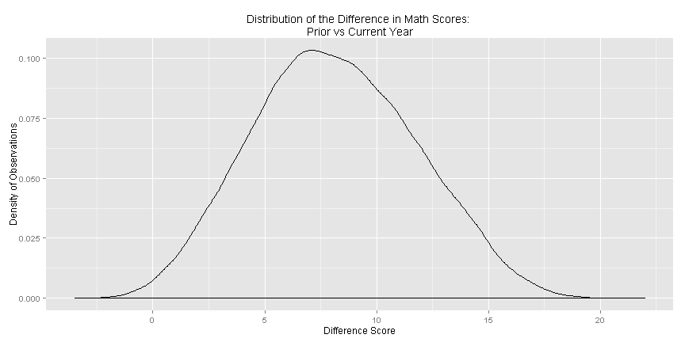
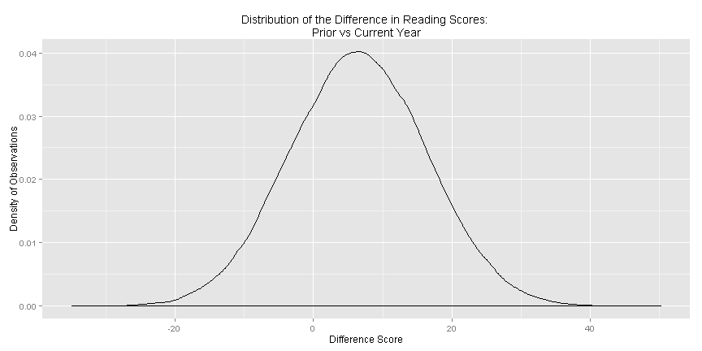

- Review
- R stuff
- Model Assumptions
- Same subjects
- Distribution of the Outcome
- Dependent Samples t-Tests
- Choosing between dependent and independent samples t-tests
- Examples
- Next Class
William R. Buchanan, Ph.D.
Strategic Data Fellow at MDE/Adjunct Prof at JSU
# Load the foreign data package and the ggplot2 package
library("foreign"); library("ggplot2")
# Store the URL where the data can be accessed
url <- "http://www.paces-consulting.org/stata/JSU/Fall2014/"
# Load either your data or the example data (Substitute your name to get your data)
example <- as.data.frame(read.dta(paste0(url, "JohnDoe-task3.dta")))
example$mthscore2example["rlascore1"]example[, 14]example is the name of your data object, $ is a symbol used to reference a column within that data object, and mthscore2 is the name of the variable you're interested inexample is still the name of your data object and ["rlascore1"] is the name of the variable you're interested inexample is still the name of your data object and [, 14] is the position - or column number - for the variable you are interested inx <- 5; y <- 3; x - y (you should see [1] 2 if you do that in R)x <- 5; x <- x - 3# Create a new variable containing the difference between math scores
example$mthdiff <- example$mthscore2 - example$mthscore1
# Create a new variable containing the difference between reading scores
example$rladiff <- example$rlascore2 - example$rlascore1
# Look at summaries of these variables
summary(example[c("rladiff", "mthdiff")])
## rladiff mthdiff
## Min. :-35 Min. :-3
## 1st Qu.: 0 1st Qu.: 6
## Median : 6 Median : 8
## Mean : 7 Mean : 8
## 3rd Qu.: 13 3rd Qu.:11
## Max. : 50 Max. :22
## NA's :20743 NA's :12808
# Create a graph of the distribution of the difference in the scores
ggplot(data = example, aes(x = mthdiff)) + geom_density() + #
ggtitle("Distribution of the Difference in Math Scores: \nPrior vs Current Year") + #
xlab("Difference Score") + ylab("Density of Observations")

# Create a graph of the distribution of the difference in the scores
ggplot(data = example, aes(x = rladiff)) + geom_density() + #
ggtitle("Distribution of the Difference in Reading Scores: \nPrior vs Current Year") + #
xlab("Difference Score") + ylab("Density of Observations")

# Test first hypothesis example
t.test(example$mthscore2, example$mthscore1, paired = TRUE)
##
## Paired t-test
##
## data: example$mthscore2 and example$mthscore1
## t = 774, df = 120533, p-value < 2.2e-16
## alternative hypothesis: true difference in means is not equal to 0
## 95 percent confidence interval:
## 8.119 8.160
## sample estimates:
## mean of the differences
## 8.139